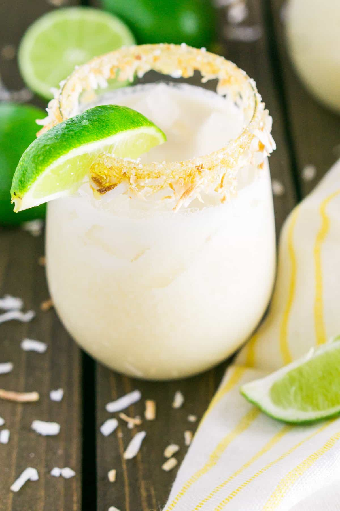

Coconut Margarita

TOASTY! YET CHILL! IT'S NUTS!!!
Ingredients
- Honey optional, for garnish
- Toasted coconut optional, for garnish
- 3 ounces cream of coconut (not coconut milk or coconut cream)
- 2 ounces tequila, preferably reposado
- 1 ounce orange liqueur, preferably Cointreau or Grand Marnier
- 1 ounce freshly squeezed lime juice (about 1 lime)
- Ice
- Additional lime slice (optional, for garnish)
Steps
- For a garnished toasted coconut rim, spread the honey on a plate and the toasted coconut on another plate. Dip the serving glass in honey and then swirl in the toasted coconut. Set aside.
- Pour cream of coconut, tequila, orange liqueur and lime juice in a cocktail shaker. Add a handful of ice. Put the top on the shaker and shake vigorously for about 15-30 seconds.
- Strain the shaken margarita into the garnished glass filled with more ice. Garnish with a lime slice. Enjoy!